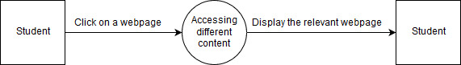

Building
MOVIES LIGHT
Light WAVE - TRANSVERSE & SOUND WAVE - LONGITUDINAL
About
Research of existing educational sites – Purple Zeus and NESA.
[Purple Zeus website banner and navigation bar] (undated). Screenshot taken from https://www.purplezeus.com/ on 27/4/19.
I particularly liked the navigation bar of the Purple Zeus website. The hover dropdown menus make it easy for users to navigate around the website and figure out the layout of the website easily. This inspired the navigation bar of my own website where I attempted to create a similar design which results in the same result.
[NESA Advice for students choosing HSC courses] (undated). Screenshot taken from https://educationstandards.nsw.edu.au/wps/portal/nesa/11-12/hsc/about-HSC on 27/4/19.
The design of body text being centred on the page was inspired from NESA’s own website. Centred text allows the user to focus on the content of the text easier as they do not have to read from left to right along the whole length of the webpage.
Planning involved for the 8-week project
Planning and documentation for this project involves tools such as a Gantt chart and a work log. A Gantt chart breaks down a project into smaller components and visually representation of the scheduling of tasks with expected and actual durations of each task.
A work log documents the day-to-day work and details the progress of tasks. Logs are entered chronologically to make it easy to follow the order of work done.
Work Log (Web view)
In addition to this, designing tools such as a storyboard, data flow diagram, context diagram and system flowchart are used to assist in the planning of projects.
These tools help to understand the task better. This is critical because gaining a good understanding of the assigned task determines how the project will be done and what is required of the solution. A feasibility study is undertaken to help decide on the project’s path moving forward by looking for problems and offering recommendations. By using design tools, the inputs and outputs, processes, logic and layout can be figured out.
Version 1 requirements
- The educational website will be hosted on my domain, eddyshao.com
- Basic hierarchical website design allows user to navigate through pages intuitively
- Website design has basic CSS such as the navigation bar
- Has notes, information and graphics to help teach and explain key syllabus concepts to readers.
- Video: animation mixed with audio to create a short demonstration of radio waves being transmitted and received.
- Audio: audio track of data being transmitted between nodes
- Animation: short gif animation of how data is transmitted and received.
- Interactivity: Links between pages
- Web page loads quickly, including images and text
- Implement each version of the new website directly. This is viable because testing is done offline to ensure everything works.
Feasibility study
Technical feasibility
Doing research and gaining resources for a project of this nature is easy as modern technology is readily available and allows students like me to access information quickly. The technology I have (laptop and desktop pc) are more than sufficient to complete this task effectively and efficiently. Compatibility between multiple browsers is possible, though not completely focused on due to the time restraints of the project.
Economic feasibility
Because I am a student, there are minimal costs involved in the creation of this project. Costs such as development cost and operational costs do involve the server hosting and domain name fees. Though there are these fees, as a student I gain intangible benefits from this opportunity to showcase my skills to a public website as a portfolio.
Scheduling feasibility
The required information technology is quick and easy to access and obtain through the internet. As a student doing the assignment by myself, factors such as other personnel and employees and retraining are not considered. Because the project is an assignment, deadlines are mandatory and must be met. If they are not met, the possible consequences involve n-warnings and lower marks for this course. On top of this, sharing time with studying and developing other assessments will prove as a difficult time restraint. Development of the solution is monitored and controlled with the use of scheduling tools such as a work log and Gantt chart.
Operational feasibility
Because there is a limited amount of resources available online for the IPT subject, the solution is feasible and may result in benefits such as increased benefits to my website and increased recognition of my skills to peers and possible employers. As a student doing a one-person project, I am the operations manager of this project. Therefore, there is no need for consideration of support from employees or other participants of the solution. Though this results a lack of an important resource, time, instead of people. Because I am the operations manager, I know my level of technical expertise and my own limits, which makes it much easier for me to plan the project.
Forms of media
The forms of media I will use are: images, web links, text and interactivity. On the website, the logo is represented as a vector image. This allows for the logo to develop further as my graphic design skills improve. I have chosen a vector image because it can be scaled without losing any quality, and has a much smaller file size than JPG files. 3D CAD is not used because it is not essential to the explanation and demonstration of the topic the website will cover. 3D CAD is also too time-consuming and complex for concepts that can be explained with more simple diagrams and animations. Video is also not necessary to demonstrate concepts in the topic, and can be done with an animation instead. Relevant audio can be used to enhance understanding of a concept when combined in a video.
Version 2 requirements report
- Video is not able to be done due to time restraints
- Audio is mixed but not used because the video is not made
- Each page has a banner for the header with a fade-in animation
- Website logo to differentiate between other websites
- Hovering over different links in the navigation bar produce a coloured background
- New hover dropdown menu for the IPT section of the navigation bar
- No animation for content due to time restraints
Justify choice of authoring tools for each component
Adobe Illustrator was used to create the website logo. This is because Illustrator allows the creation of vector-based images, which allow for small file sized and scalable images for different display sizes.
An online tool called TweenUI was used to create each one of the header banners. It allows for quick and easy creation of animated website banners which can then be exported as multiple file types, depending if you are a paying user or not. Because I am using the service completely free, my banners are exported in the GIF file type.
Although audio is not used due to time restraints, an audio clip has been mixed in Audacity, which was to be used in a video. Audacity is one of the best tools to record and edit audio because it is free source and has enough functionality even for professionals to use.
Optimising of all images (filetype, size etc.)
To optimise images, they are commonly compressed and saved as JPG files. JPG is a type of lossy compression for images which allow for small file sized while still having enough quality to be viewed on the World Wide Web.
The SVG (Scalable Vector Graphics) file format is chosen for the website logo because it allows the logo to be scaled on any device of any size. Furthermore, because of its nature as a vector image, the file size is smaller than bitmap filetypes.
For example: The website logo is both exported from Adobe Illustrator as a JPEG file and a SVG file.
However, the JPEG file is 26 times larger than the SVG file. This is because vector images are saved as lines of algorithms instead of pixels like JPG files, resulting in much less data to save.
Justify and demonstrate use of tools to assist with planning
A decision tree is not appropriate to the planning of my project as it is hierarchical and information fits in categories. An example of a project where a decision tree is appropriate is a game, where navigation is non-linear and event outcomes are important.
A data dictionary is not appropriate to the project either. A data dictionary for CSS would be too complicated because it has many classes, selectors and declarations within these classes and selectors. Therefore, it is not a practical way to represent metadata.
Updated files are regularly uploaded to the server. This allows for testing of the website and its functionality by checking if all features are working properly and checking all links are working and that they go to the intended page. Test data is not appropriate as there is no input going into the website.
Because the website design is simple and does not require many processes, a data flow diagram is not needed.
An operation manual or help system is not necessary as the website is hierarchical, which allows the user to easily find their way around the website according to categories.
A context diagram helps to understand the process of simple operations that occur within the system. For example, below is a context diagram which shows the process of accessing content on a website.

A storyboard is a tool used to represent the navigation of hypermedia. For a website, storyboards are used to show the navigational layout of the web pages.
A system flowchart is a visual way of representing flow of data and the logic of a system including hardware and software. It shows the processes and sequence of all events that occur in the system.

Ethical ramifications of the overall project
My project assists in the learning of other students studying the Information Processes and Technology course. By using my website as a supplement to in-class learning, students can gain a greater understanding of the IPT course through simple diagrams and learn small details. Some students may choose to bludge in class, thinking that relying solely on online resources will be enough to pass their course, but this is in fact a hinderance to their learning, and so educational websites must be used in caution.
Because this website is used to teach people about a government approved course, the information must be timely and accurate. If the information on the website is not accurate, viewers will be misinformed, and their learning hindered due to the conflicting information they receive.
This website does not collect data nor store any data from visitors to the site, therefore each visitor’s privacy and confidentiality is guaranteed. Furthermore, the website uses HTTPS to ensure visitors a secure connection to the server without risk of being redirected to a malicious site.
Ethical considerations of relevant project components
Though communication systems are a large part of modern society and bring great benefits to all people, there are also social and ethical issues that arise from the technology. This includes the issues in messaging systems and general use of the internet. Online messaging systems provide a free and instantaneous way to communicate with people from all over the world. However, it is not as secure as traditional methods of communication such as speaking face-to-face. This means that privacy and confidentiality of users is not being guaranteed and their messages may be intercepted or read by other people.
Misinterpretation of information is also an important issue in the use of communication systems. Because of the omission of context, body language and/or tone that is normally present in face-to-face communication, this may result in phrases being interpreted incorrectly by the receiver of the message.
Communication systems greatly impact the nature of work and business. Through internet trading or e-commerce, new jobs in the information technology industry are constantly being created. Internet shopping also provides customers with new ways to purchase and receive goods with the introduction of online orders and delivery to customer’s doors. In contrast to this, jobs such as retail at shop fronts are being taken away or fewer people being employed because of the development of e-commerce. In addition to this, internet banking allows customers to view all their banking details and perform various banking functions such as viewing account balance and transferring money. This means that employees of banks are not required to perform these tasks, requiring people with more skills in information technology and less banking skills.
All aspects of the website are visual, and there is no audio. This makes it impossible for any person with hearing impairment to learn from the content on the website.
High contrast between text and background allows readers to read content clearly without any confusion.
Any items not created from scratch
All ideas and content used from other creators are correctly cited in the web pages.
Add further references here: